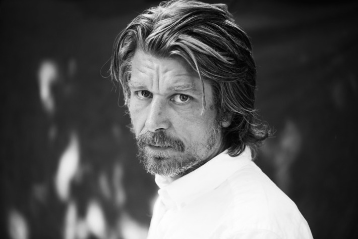

Mi-am propus să ofer în fiecare zi conținut nou: o recomandare de carte, de melodie, o biografie de autor, un citat, o glumă... Astăzi este rîndul:

Scriitorul norvegian Karl Ove Knausgård (n. 1968, Oslo) a devenit cunoscut pentru un roman autobiografic în 6 volume, publicat între 2009 și 2011 și intitulat Lupta mea (Min Kamp, în norvegiană). Romanul a fost controversat din mai multe motive, primul fiind chiar titlul, care aduce aminte de Mein Kampf al lui Hitler, iar apoi, pentru conținutul extrem de personal și cu o sinceritate dureroasă în multe ocazii. Knausgård însuși spunea că s-au stricat multe prietenii și chiar relația cu soția sa a avut de suferit din cauza unor pasaje din carte, în care nivelul confesiunilor sau istorisirilor sale ajunge în cele mai adînci colțuri ale sufletului său, cuprinzînd inclusiv gînduri dintre cele mai ascunse.Însă acest stil extrem de deschis, precum și nivelul detaliilor conținute în textele sale i-au adus și recunoștință, fiind adesea comparat cu Marcel Proust. Într-adevăr, în romanul său, evenimente sau obiecte aparent banale sînt descrise cu o abundență de amănunte, așa încît atmosfera dintr-un bar sau iureșul trecătorilor pe stradă, pe ploaie ajung să fie conținute în pasaje ce se întind pe 40, 50 sau uneori chiar mai multe pagini.
Din cele 6 volume ale Luptei mele, doar primele 5 au fost traduse în engleză și română, iar al șaselea a apărut în engleză pe 30 august 2018.
Pe lîngă seria Lupta mea, Knausgård a scris și o serie de 4 romane-eseuri, intitulate după cele 4 anotimpuri, în care descrie obiecte din viața de zi cu zi (exemple includ: periuța de dinți, mărul, vasul de toaletă, tristețea, oamenii). Intenția sa a fost să o ajute pe mezina familiei să-și facă intrarea în lume, deoarece primul volum, Toamna, a fost început înainte ca ea să se nască. Momentan, acestea nu sînt disponibile în traducere în română.
Notă personală: Motivul pentru care Knausgård a devenit rapid unul dintre scriitorii mei preferați, în ciuda faptului că nu am, de multe ori, răbdarea necesară pentru a savura pasajele descriptive extrem de lungi sau detaliate, este că aceste pasaje sînt pline și de introspecție. Totodată, el m-a invitat la a face un efort pentru a vedea chiar fiecare părticică a lucrurilor din jur, a face conexiuni, a da interpretări și a nu lăsa nimic aparent evident să treacă. De multe ori, atunci cînd sînt convins de ceva, cînd totul pare foarte clar, sînt tentat să omit detalii sau chiar etape întregi în descriere, fie verbală, fie în scris. Iar acest lucru este dăunător, în timp, deoarece credința mea este că literatura ar trebui să fie, întîi de toate, o stare. Or această stare la care vreau să revin cu maximă fidelitate oricînd nu poate fi transmisă fidel altfel decît cu toate detaliile. Mă pot agăța de fiecare dată de un alt amănunt, pot realiza conexiuni noi sau măcar să-mi fixez declanșatoare de senzații, imagini, amintiri.
În clipul de mai jos, un interviu cu Knausgård și Zadie Smith, din 2016.
Și un elogiu din partea filosofului suedez Martin Hägglund, la o conferință la Universitatea Yale.